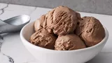

Home
Pizza

Description
You’ll find the full, step-by-step recipe below – but here’s a brief overview of what you can expect when you make this chocolate ice cream:
Bring the milk, sugar, cocoa, and salt to a simmer in a saucepan.
Whisk ½ of the milk mixture into the yolks, return to the pan, and stir until thickened.
Remove from heat and stir in chopped chocolate.
Refrigerate in a chilled bowl until cold.
Add the remaining ingredients, then freeze in an ice cream maker.
Ingredients
- 1 cup milk
- ¾ cup sugar
- 2 tablespoons unsweetened cocoa powder
- ¼ teaspoon salt
- 3 egg yolk, lightly beaten
- 2 ounces semisweet chocolate, chopped
- 2 cups heavy cream
- 1 teaspoon vanilla extract
Steps
- Gather all ingredients.
- Combine milk, sugar, cocoa powder, and salt in a saucepan over medium heat. Bring to a simmer, stirring constantly.
- Place egg yolks into a small bowl. Gradually whisk in about 1/2 cup of hot milk mixture, then return to the saucepan. Heat and stir until thickened, but do not boil.
- Remove from the heat and stir in chopped chocolate until melted.
- Pour into a chilled bowl and refrigerate, stirring occasionally, until cold, about 2 hours.
- Stir in cream and vanilla. Pour into an ice cream maker and freeze according to manufacturer's directions.